罗马人经常因为他们用复杂的方式写数字而招致批评。罗马数字遭受诋毁是因为它们使计算变得痛苦。没有什么好办法可以算出XLVII和DCDXXIV的乘积。但是，当写成47×924的时候，问题就变得不那么吓人了。不过，我们大多数人都会拿出一个计算器来解决这个问题。
一个经典的数学T恤上写道：“世界上有10种人：懂二进制的人和不懂的人。”当你读完本章时，你会明白这个玩笑的梗。
但是，在我们把罗马体系当作一个古怪的时代错误抛弃之前，我们应该承认它的基本概念——用字母代表数值——是非常有用的。事实上，罗马数字的这一精髓传承到了今天，但是有了新的面貌。以下两句话哪一句更容易理解？
●整修该国的高中将耗资23000000美元。
●整修该国的高中将耗资23M美元。
当然，我故意忽略了第一个数字中的逗号，使其难以阅读（从而也表明我举这个例子的意图）。即使用逗号读“五角大楼要求额外的19,000,000,000美元”也比“额外的190亿美元”更难解析。可见，用字母作为数字的缩写是方便的。
我们使用位值制（place–value system）的一个好处就是简化了计算。但让我们思考一下我们在将两个数字相乘时所付出的努力。首先，我们要记住“数学事实”。也就是说，我们牢记加法和乘法表（包括令人生畏的8×7）。我们经过一个冗长的学习过程，在这个过程中，我们把数字整齐排成列，每个数字的每一位都乘以另一个数字的每一位，跟踪进位，并以多线加法的方式得出结果。
诚然，十进制数字比罗马数字更容易进行乘法运算，但仍然费力。因此，人们自然会考虑是否有另外一种方法来书写数字，从而使计算变得更加容易。我们发现有一些选择可以使计算变得更简单，清晰程度却有所降低。
表示数字的最简单的方法是使用一进制（unary）。在这种方法中，我们只是简单地将标记（我们将使用数字1）作为我们想要表示的数字。也就是说写数字3，我们做3个标记：111。加法和乘法变得非常容易。要计算3+5，我们只需写两个数字111和11111，彼此相邻（之间没有空格），以找到答案11111111。乘法也很容易。我们在垂直方向写一个数字，在水平方向写另一个，形成一个图表，如下所示：
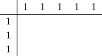
然后，我们在每一行和每一列标出一个标记，完成图表的内部：
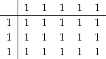
最后，我们从图表中取出所有的标记，并排列在一起得出答案：111111111111111。当用一进制表示数字时，运算加法和乘法要比十进制或罗马数字容易得多。
我们鼓励读者开发简单的减法和除法程序。
当然，这种计算的简便性要付出理解和实用性方面的可怕代价。我们不想用这个方法来计算47×924。
用二进制表示的数字与使用十进制（或罗马）记数法相比，不太容易理解，但计算变得更容易。出于这个原因，计算机在内部以二进制表示数字。要理解二进制记数法是如何工作的，我们需要回想一下十进制记数法的一些细节。
二进制也被称为“base two”。
以十进制记数法表示的数字使用十个字符（数字0到9）水平书写。每个数字决定的数值数额取决于数字出现的位置。也就是说，29和92表示不同的值，因为2和9在数字中位于不同的位置。29是“两个10和一个9”，5804是“五个1000、八个100、零个10和一个4”。十进制数字的每个数位代表10的不同幂。从右向左读，数位值分别是一、十、百、千、万，等等。它们被写成100，101，102，103等，数字5804的含义是：
5×103+8×102+0×101+4×100
回想一下，指数意味着基数相乘的次数，所以103表示1 0×1 0×1 0。当然，101表示10，按照惯例，100表示1。
这是有道理的，因为每个随后的10次方都是之前的10倍。
十进制数字中的每个数位都等于一个10的幂的值。当十进制数字超过四位时，读取变得困难，而插入逗号则增强了可读性。
为了区分二进制和十进制数字，我们可以将单词TWO作为下标，如下所示：1101 TWO。如果一个只有0和1的数字是十进制数字，我们可以把字母TEN作为下标来消除混淆：1101TEN。
二进制标记法的工作方式与十进制相同，但每个位值都是2的幂。
在二进制记数法中，我们只使用两个数字：0和1。二进制数字中的每个位代表不同的2的幂。从右侧开始，位值依次是1，2，4，8，16，等等。例如，二进制数字10110意味着
1×24+0×23+1×22+1×21+0×20,
等于16+4+2=22。
检验你的理解：用二进制表示42，用普通的十进制标记法表示11011Two。答案在[1]。
二进制数字比十进制更难理解；二进制1011001比它用十进制记数法表示的89缺乏直观性。二进制的优势来自它在计算中的效用。首先，我们只需要这两张表格，而不是记住几十个数学事实：
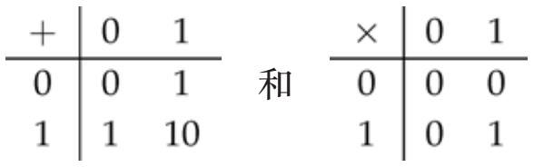
注意，在加法表中，10是用二进制写的数字2。
二进制数的加法是通过与十进制相同的方法来完成的。假设我们要将10100TWO和1110TWO相加。我们将这些数字叠加在一起，向右对齐：
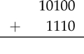
我们现在按照从右到左的顺序将每列中的数字加起来，如果需要的话，可以将它们延伸至下一列。在这个例子中，我们从右边两个0相加开始，得到0：
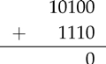
现在我们加位值2的数列，0+1（无进位）：
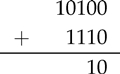
接下来是位值4所在的列。1+1等于10，所以我们写0并进1：
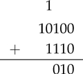
在位值8所在的列中，1 + 0 + 1等于10，所以和前面一样，写0并进1：
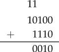
我们在位值16的列里完成运算。1+1等于10，我们在位值16的列写0，在位值32的列写1：
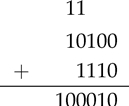
我们发现10100+1110=100010。转换成十进制，得到：
10100TWO=20，1110TWO=14，100010TWO=34，当然20+14=34。
二进制数的乘法并不比十进制的乘法麻烦。二进制数的计算方法基于两种概念：二进制数的加法（正如我们刚才所描述的）以及2的幂相乘的乘法。
十进制数乘以10是容易的，我们只要简单地加上一个这样的零：23×10=230。同样，在二进制中，乘以2是容易的，我们只是附加一个零。例如，1101×10=11010。我们可以看出这是转换为十进制的正确写法，但这样写1101更具说明性：
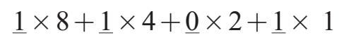
然后当乘以2后得到：
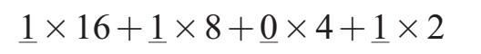
在最后放置一个+0×1，表明结果确实是11010。
将一个数字乘以4或8，或者其他任何一个2的幂同样简单。例如，乘以8（1000two），我们只需追加三个零。
乘法现在变成了一个移位和加法的游戏。我们通过将11010乘以1011来说明这一点。首先，我们写第二个数字1011：
1011=1000+10+1
要乘以11010我们这样写：
11010×1011 =11010×(1000+10+1)
=(11010×1000)+(11010×10)+(11010×1)
=11010000+110100+11010
其中下划线的零是我们附加到11010的数字。我们也可以用传统的乘法形式来写：
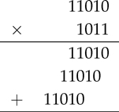
最后，我们将这些项相加得出答案：
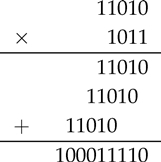
我们转换成十进制来检查我们的运算：
11010TWO=16+8+2=26，
1011TWO=8+2+1=11，
100011110TWO=256+16+8+4+2=286。
确实，26×11=286。
十进制记数法也用于整数以外的数字，个位值不需要是最右边的数字。通过放置一个小数点，额外的置放（每个位置都代表其前值的十分之一）赋予我们表达小数的能力。当我们写34.27时，我们是在写一个缩写：
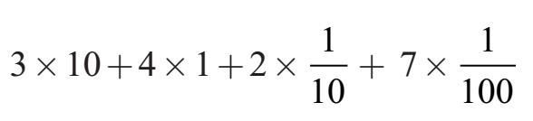
在英文表达的二进制运算中，我们可能不希望将分隔符称为小数点（decimal）。而用另一种叫法：二进制小数点（binary point），或者二进制小数点（radix point）。
二进制数字也可以用来表示小数。小数点右边每一个位置的值都是左边相邻值的一半。例如，101.011TWO的意思是：
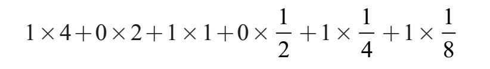
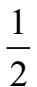
的神秘写法是0.1TWO！2和10不是基数的唯一选择。以3为基数的数制被称为三进制（ternary）。在三进制中，我们使用数字0、1和2。三进制数字的每个位代表3的不同的幂。例如，1102THREE等于：
1×27+1×9+0×3+2×1
等于十进制数字38。
计算机程序员使用十六进制记数——也称为十六进制（hexadecimal）。正如十进制数字由十个不同的符号（数字0到9）组成，我们需要十六个不同的十六进制数字。约定是使用字母A到F来表示数字10到15，而不是再发明六个字符。
三进制数中小数点右边的位置是其前一位的
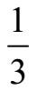
。因此，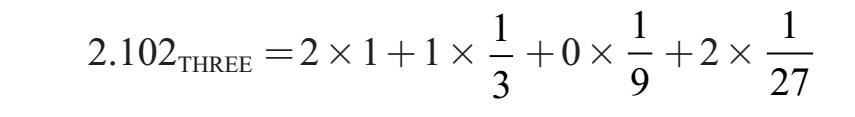
[1]问题的答案：将42写为32+8+2，我们看到它等于101010TWO。另一方面，11011TWO等于16+8+2+1，即27。